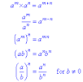

Decimal fractions such as 0.012 and 0.001 can be expressed as powers of 10.
Examples.
0.001=1/1000=1/10³=10-³
0.03=3/100=3/10²=3×10-²
0.17=1.7/10=1.7/10¹=1.7x10-¹
The numbers 10-³,3x10-² and 1.7x10¹ are in standard form.
To add numbers in standard form you can either change to ordinary form or factorise.
Change the numbers to ordinary form
6.51x10³ + 4.3x10⁴
=6510+43000
=49 510
=4.951x10⁴
Factor out 10³
6.51x10³ + 4.3x10⁴
=10³(6.51+4.3x10)
=10³(6.51+43)
=10³(49.51)
=10³x4.951x10
=4.951x10⁴
Use the laws of indices when simplifying the powers of 10 that are added or divided.
laws of indices
Example.
Simplify (6x10-³)x(7x10-¹).
=6x10-³x7x10-¹
=(6x7)x10-³-¹)
=42x10-⁴
=4.2x10x10-⁴
=4.2x10-³
(2x10²)÷(5x10⁴)
=(2/5)x10²-⁴
=0.4x10-²
=4x10-¹x10-²
=4x10-³
| Copyright©2016 Burt Chulu Tutorials. |